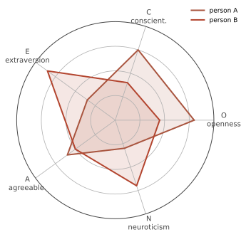

个体 III · 人格：理论与测量
人格 = 跨情境、跨时间相对稳定的思维、情感与行为模式。本页两条线：四大理论传统（各自的历史地位与当代地位差距极大）与测量的科学——后者包含本站最实用的一次"打假"：MBTI 与大五的对比。
1. 四大传统与它们的当代地位
| 传统 | 核心 | 当代地位 |
|---|---|---|
| 精神动力学（Freud, Jung, Adler） | 无意识冲突、防御机制、早期经验 | 历史地位极高、实证地位低：本我/自我/超我与心理性欲阶段不可证伪；但"无意识加工""防御性思维"的一般思想被认知科学以新形式吸收 |
| 人本主义（Rogers, Maslow） | 自我概念、无条件积极关注、自我实现 | 理论松散但深刻影响了心理治疗实践（第 17 页：治疗关系是最强的共同因素之一） |
| 行为/社会认知（Bandura, Mischel） | 情境、自我效能、交互决定论 | 【稳】自我效能是预测力扎实的构念；Mischel 的"人-情境之争"永久改变了这个领域（见下） |
| 特质论（Allport → Cattell → Big Five） | 用维度描述并预测 | 当代主流，测量学基础最扎实 |
弗洛伊德怎么读：把他当思想史与临床观察的先驱（无意识、童年重要性、谈话治疗的发明）而非当代科学理论。荣格的原型与内外向概念同样：内外向被特质论继承并实证化，原型没有。
2. 人-情境之争与它的和解
Mischel（1968）指出：人格特质对单次具体行为的预测通常只有 \(r \approx 0.3\) 上下（"人格系数"）——情境的力量常常更大（第 15 页）。这引发了持续二十年的争论，和解结论如下【稳】：
- 聚合原则：特质预测跨情境聚合的行为总量很好，预测单次行为很差（就像天气预报预测某一天差、预测气候好）——这是所有"人格测验预测个体单次表现"宣称的统计天花板；
- 交互作用：人选择并塑造情境（外向者去派对），情境也激活不同特质（强情境压缩个体差异：红灯前所有人都停）；
- 情境特异性签名：Mischel 后期提出人格的稳定性在于"如果…那么…"的模式（"他在被批评时才变得敌意"），而非跨情境的一致水平——这是当代最精细的描述。
3. 大五（Big Five / OCEAN）

来源：词汇假设（重要的人格差异会沉淀进语言）+ 因素分析，在多语言、多文化中反复得到五因子结构【稳】。
效度【稳】：尽责性预测学业与职业绩效、健康行为与寿命（是大五中预测力最广的一个）；神经质预测负性情绪、心理障碍风险与关系满意度；外向性预测社交活动与领导涌现；开放性预测创造性活动与政治态度；宜人性预测合作与关系质量。效应量多在 \(r = 0.2\)–\(0.4\)（中等，群体层面有用、个体层面不确定——第 11 页图 11.1 的同一句话）。
稳定性与变化：随年龄的成熟化原则【稳】：尽责性与宜人性上升、神经质下降（跨文化一致）；排序稳定性高但绝对水平会变；生活角色（工作、承诺关系）与针对性干预都能带来可测量的变化——人格不是命运。
HEXACO 增加"诚实-谦逊"维度，在预测不道德行为上有增量效度【摇→稳】；黑暗三联征（自恋、马基雅维利主义、精神病态）在组织与关系研究中活跃。
4. 测量：本页的打假部分
投射测验：罗夏墨迹与 TAT——【摇→倒】 多数计分系统的信度效度不足以支持个体化临床决断（Exner 系统改善了标准化但争议持续）；在司法与人事场景使用尤其成问题。
【倒】MBTI：全球最流行的人格工具，但心理测量学界的评价一致偏负：
- 类型化的错误：把连续分布二分（多数人在中间附近），导致重测时约 1/3–1/2 的人会换类型；
- 信度问题：数周后重测类型变动率高；
- 效度证据不足：对工作绩效的预测力弱，且四个维度与大五高度重叠（E/I≈外向、S/N≈开放、T/F≈宜人、J/P≈尽责）——能预测的部分是大五在做工作，剩下的是巴纳姆效应；
- 巴纳姆/福勒效应：模糊的正面描述人人觉得准（星座、算命、"性格报告"共用这一机制——这是可在课堂上复现的稳固实验）。
结论：MBTI 作为自我反思的对话工具无妨，作为招聘、晋升、择偶、职业规划的依据没有科学基础。要用就用大五（NEO-PI-R、BFI-2 等有公开测量学证据的量表）。
其他常见工具：MMPI（临床，实证锁定编制、有效度量表检测作假）；DISC、九型人格等商业工具的测量学证据普遍薄弱【摇→倒】。
5. 反直觉清单
- 人格测验最大的危险不是不准，是"准得让人信服"（巴纳姆效应）——信度与效度必须分开看（第 02 页）；
- 自评人格有系统偏差（社会赞许性、自我洞察有限）——他评（同事、伴侣）常常预测得更准，尤其对"能力"与"惹人厌"这类自己看不见的维度；
- 【稳】"性格内向"不是缺陷：外向性与幸福感相关但内向者的适应路径不同；试图长期"表演外向"的代价在研究中可见（自我损耗式解释虽已弱化，但角色扮演的疲劳效应在自我一致性研究中仍有支持）。
个体差异讲完。下一线把人放回人群里——社会心理学，也是本站重审经典实验最集中的一页。